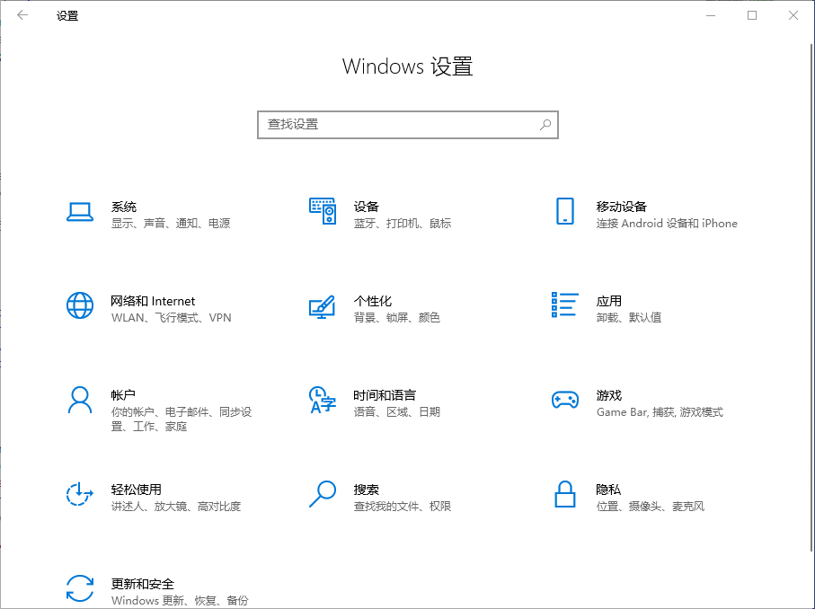

怎么在学校访问互联网
重要信息：如需获取VPN密码请自行联系管理员或通过邮箱联系classicmcnet@outlook.com
使用代理连接网络
注意：此方法大部分情况下仅能使得浏览器访问互联网，更稳定的方式详见“使用VPN连接网络”
使用Windows电脑
首先，打开设置

点击网络和internet，选择代理
开启“使用代理服务器”
在地址中填入“10.88.202.78”，端口填入50000后 即可连接外网
然后，点击保存

使用手机
首先，打开手机的设置
连接校园网中的WiFi，有关教学楼中的WiFi密码，请参阅教程中的《教学楼中的WiFi密码登记》一节。
然后，点击Wi-Fi，进入wifi设置页面
找到“代理”选项，将“代理”更改为“手动”模式
在地址中填入“10.88.202.78”，端口填入50000后 即可正常连接互联网
使用VPN连接网络
使用手机
打开WiFi设置
连接校园网
进入我们的网站: 10.88.202.78
进入共享目录
按照如下路径点击：软件>联网工具>手机上网
下载 OpenVPN.apk 和 把我导入openvpn.ovpn
安装完成之后打开openvpn软件，把下载好的把我导入openvpn.ovpn导入
账号为ps
点击下面的第一个复选框
跳出的框里面填写密码--密码请联系管理员获取
然后点击保存，然后连接即可
注：ios的openvpn要去外区AppStore下载，请自备外区苹果ID（没有话可以联系+v Storm_Snow_1145）
使用电脑
打开设置
点击网络和Internet
点击VPN
点击添加VPN连接

名称填写你想要的名称
地址填写 10.88.202.78
预共享密钥填写 pysyzx
用户名为 ps
密码为 请联系管理员获取
然后，点击保存
作者：Yuebi
日期：2025年10月20日
日期：2025年10月20日